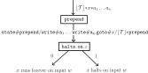

Undecidability via the Halting Problem
The undecidability of the Halting problem has many severe consequences.
In a previous lecture, we already briefly talked about "reductions", where we were able to solve a problem \(P_1\) using a pre-existing solution to \(P_2\), i.e., we reduced \(P_1\) to \(P_2\).
Many other languages (decision problems) can be shown to be undecidable by reducing the halting problem to them.
(Decidability Reduction)
Let \(L_1,L_2 \subseteq A^*\) be languages.
We say that decidability of \(L_1\) reduces to decidability of \(L_2\) (or simply that \(L_1\) reduces to \(L_2\)) if the following statement holds: if \(L_2\in \mathsf{Dec}\), then \(L_1 \in \mathsf{Dec}\).
Intuitively, \(L_1\) reduces to \(L_2\) if any decision procedure for \(L_2\) can be used to build a decision procedure for \(L_1\).
Reducing the halting problem to a given decision problem is a standard technique for showing that a given language is not decidable.
(Reduction of the Halting Problem)
Let \(L \subseteq A^*\).
If \(L_{Halt}\) reduces to \(L\), then \(L \notin \mathsf{Dec}\).
Suppose that \(L \in \mathsf{Dec}\) (i.e., that \(L\) is decidable).
Then, if \(L_{Halt}\) reduces to \(L\), we must also have \(L_{Halt} \in \mathsf{Dec}\).
This last statement is false by the undecidability of the halting problem.
Therefore, \(L \notin\mathsf{Dec}\).
This is a very handy lemma!
(Halting on Empty Problem)
Consider the language below, called the
halt-on-empty language:
\[
L_{\varepsilon} = \{\lfloor \mathcal T\rfloor \mathtt{*}x \mid \text{Turing machine \(\mathcal T\) at state \(x\) halts on input \(\varepsilon\)}\}
\]
We are going to argue that \(L_{Halt}\) reduces to \(L_{\varepsilon}\).
Let's see how this works: suppose for a contradiction that \(\mathcal E\) is a Turing machine with a state \(\mathtt{halts\_on\_\varepsilon}\) that decides the language \(L_{\varepsilon}\).
We are going to show how to use \(\mathcal E\) to design a decision procedure for \(L_{Halt}\).
(Relating \(\varepsilon\) to Halting)
Show that \(\lfloor \mathcal T \rfloor \mathtt{*}x\mathtt{*}\varepsilon \in L_{Halt}\) if and only if \(\lfloor \mathcal T \rfloor \mathtt{*}x \in L_\varepsilon\).
Unlike the halt-on-empty problem, the input to the ordinary halting problem includes an input string in addition to the encoding of the Turing machine and state name.
The general idea behind the construction is to transform the string \(\lfloor \mathcal T \rfloor \mathtt{*}x\mathtt{*}w\) (that may or may not be an element of \(L_{Halt}\)) into the string \(\lfloor \mathcal T'\rfloor \mathtt{*} y\), where \(\mathcal T'\) is a Turing machine with a state \(y\) that writes the word \(w\) to the tape and then runs the program \(x\) in the original Turing machine \(\mathcal T\).
This entails writing a program that prepends a string of code to \(\lfloor \mathcal T \rfloor\) that encodes the writing procedure for the word \(w\).
(Write Your Own Prepend)
Design a Turing machine \(\mathcal W\) (for "writer") with a program \(\mathtt{prepend}\) that computes the following string transformer,
\[\begin{aligned}
&\mathcal W_{\mathtt{prepend}}(u \mathtt{*} x \mathtt{*} a_1\cdots a_n) \\
&= \mathtt{state\#prepend {/} write\# a_1 \dots write\# a_n.goto\#} x \mathtt{/} u \mathtt{*prepend}
\end{aligned}\]
Compute the values of the following two expressions below:
\[
\mathcal U_c(
\mathtt{state\#x{/}if\#0{:}write\#1.halt{*}x{*}0}
) =
\]
\[
\mathcal U_c(\mathcal W_{\mathtt{prepend}}(
\mathtt{state\#x{/}if\#0{:}write\#1.halt{*}x{*}0}
) \mathtt{*} \varepsilon) =
\]
Define the string
\[
s = \mathtt{state\#prepend {/} write\# a_1 \dots write\# a_n.goto\#} x
\]
Now, when we run the new program, encoded as \(s\mathtt{/}\lfloor \mathcal T \rfloor\mathtt{*prepend}\), on the empty string, this gives the same result as running \(\mathcal T\) starting from \(x\) on the input string \(w\).
Phrased in terms of a universal Turing machine,
\[
\mathcal U_c(s\mathtt{/}\lfloor \mathcal T \rfloor\mathtt{*prepend}\mathtt{*}\varepsilon) = \mathcal T_x(w)
\]
What this allows us to do is use the decider for \(L_{\varepsilon}\), \(\mathcal E\) at state \(\mathtt{halts\_on\_\varepsilon}\), to check if the resulting program halts on an empty input.
As we have just seen, the new program (with \(s\) attatched) halts on \(\varepsilon\) if and only if \(x\) halts on input \(w\).
This accomplishes our task.
Formally, we can directly define \(\mathcal H\) and \(\mathtt{dec\_if\_halt}\) by setting
\[
\mathcal H_{\mathtt{dec\_if\_halt}} ( w )
= \mathcal E_{\mathtt{halts\_on\_\varepsilon}} (\mathcal W_\mathtt{prepend} ( w ))
\]
By composing, we obtain the following:
\[\begin{aligned}
&\mathcal H_{\mathtt{dec\_if\_halt}}(\lfloor \mathcal T \rfloor \mathtt{*} x \mathtt{*} w) \\
&= \mathcal E_{\mathtt{halts\_on\_\varepsilon}}\big( \mathcal W_\mathtt{prepend}(\lfloor \mathcal T \rfloor \mathtt{*} x \mathtt{*} w) \big) \\
&= \mathcal E_{\mathtt{halts\_on\_\varepsilon}}\big( \mathtt{state\# \mathtt{prepend} {/} write\# a_1 \dots write\# a_n.goto\#} x\mathtt{/} \lfloor \mathcal T \rfloor \mathtt{*} \mathtt{prepend} \big) \\
\end{aligned}\]
Since \(\mathcal E\) at \(\mathtt{halts\_on\_\varepsilon}\) decides \(L_{\varepsilon}\), this shows us that \(\mathcal H_{\mathtt{dec\_if\_halt}}(\lfloor \mathcal T \rfloor \mathtt{*}x\mathtt{*}w) = 1\) if \(x\) in \(\mathcal T\) halts on input \(w\), and \(\mathcal H_{\mathtt{dec\_if\_halt}}(\lfloor \mathcal T \rfloor \mathtt{*} x \mathtt{*} w) = 0\) if \(x\) in \(\mathcal T\) does not halt on input \(w\).
In other words, \(\mathcal H\) at \(\mathtt{dec\_if\_halt}\) is a decider for the halting problem.

By our Reduction of the Halting Problem lemma, it follows that \(L_{\varepsilon}\) is undecidable.
The next two exercises are further steps toward understanding how the reduction in the example works.
(The Writer, Concretely)
Consider the "writer" program \(\mathcal W_y\) in the example above.
Test it on the following examples:
-
\(\mathcal W_y(\mathtt{*x{*}0})=~\)
-
\(\mathcal W_y(\mathtt{state\#z/if\#\_{:}move\#left.goto\#z{*}z{*}01})=~\)
-
Consider the following code:
state flip
if _ : goto halt
if 0 : write 1.move right.goto flip
if 1 : write 0.move right.goto flip
Let \(s\) be the string of symbols in the code above.
Then \(\mathcal W_y(\mathtt{*flip*}11)=~\)
The halting problem can be reduced to many other problems that deal with "static analysis" (i.e., to encodings of Turing machines) in the same way as the halting-on-empty problem.
Furthermore, once we know that the halting-on-empty problem is undecidable, we can discover the undecidability of other problems by reducing the halting-on-empty problem to them!
(Empty Language Problem)
The language below consists of all encodings of Turing machines (and states) that do not recognize any words.
\[
L_\emptyset = \big\{\lfloor \mathcal T\rfloor \mathtt{*}x \mid \text{\(x\) does not halt on any input}\big\}
\]
Show that \(L_\emptyset\) is undecidable.
Reduce \(L_\varepsilon\) to \(L_{\emptyset}\) as follows:
Let \(\mathcal E\) at \(y\) be a decision procedure for \(L_\emptyset\).
Consider any Turing machine \(\mathcal C\) with state \(z\) that takes in a string \(u\mathtt{*}x\) and outputs \(s_x\mathtt{/}u\mathtt{*clear}\), where
| \(s_x =\) |
state%clear/
if%_:goto%\(x\)/
if%0:erase.move%right.goto%clear/
if%1:erase.move%right.goto%clear
|
(without all of the whitespace and line breaks).
That is,
\[
\mathcal C_z(u\mathtt{* x}) = s_x\mathtt{/}u\mathtt{*clear}
\]
Notice that \(s_x\mathtt{/}\lfloor \mathcal T\rfloor\mathtt{*x}\) is an encoding of the program that clears the tape and then runs \(\mathcal T\) from state \(x\).
Show that
\[
\mathcal E_y(\mathcal C_z(\lfloor \mathcal T\rfloor \mathtt{*x}))
= \begin{cases}
1 &\text{if }\varepsilon \in \mathcal R(\mathcal T, x) \\
0 &\text{if }\varepsilon \notin \mathcal R(\mathcal T, x)
\end{cases}
\]
Conclude that \(L_{\emptyset} \notin \mathsf{Dec}\).
Rice's Theorem
These "static-analysis" undecidability results are not coincidental, as the theorem we are about to state shows.
It's called Rice's Theorem, named after Henry Gordon Rice.
The theorem requires some terminology to state precisely.
(Non-trivial and Extensional)
Let \(\mathbf{TM}\) be the set of all pairs \((\mathcal T, x)\) where \(\mathcal T\) is a Turing machine and \(x\) is a state of \(\mathcal T\).
Let \(P \subseteq \mathbf{TM}\).
-
\(P\) is nontrivial if \(P \neq \{\}\) and \(P \neq \mathbf{TM}\).
-
\(P\) is extensional if the following holds:
for any \((\mathcal T, x) \in P\) and any \((\mathcal S, y) \in \mathbf{TM}\), if \(\mathcal T_x = \mathcal S_y\) (i.e., they are implementations of the same string transformer), then \((\mathcal S, y) \in P\) also.
(Rice's)
Let \(P \subseteq \mathbf{TM}\) be nontrivial and extensional.
Then the language
\[
L_P = \{\lfloor \mathcal T \rfloor \mathtt{* x} \mid (\mathcal T, x) \in P\}
\]
is undecidable.
Just a quick observation:
If \(P \subseteq \mathbf{TM}\) is nontrivial and extensional, then \(\mathbf{TM}\setminus P\) is nontrivial and extensional.
Suppose for a contradiction that \(\mathcal P\) at state \(z\) is a decider for \(L_P\).
Since \(P\) is nontrivial, there is a Turing program \((\mathcal M, m) \in P\) and a Turing program \((\mathcal N, n) \notin P\).
Without loss of generality, we can take \((\mathcal N, n) \notin P\) to be a (in fact, any, by extensionality) Turing program that never halts on any input (otherwise, we give the argument for \(\mathbf{TM}\setminus P\) instead).
Then we have
\[
\mathcal P_z(\lfloor \mathcal M\rfloor \mathtt{* m}) = 1
\qquad
\mathcal P_z(\lfloor \mathcal N\rfloor \mathtt{* n}) = 0
\]
We are going to use \(\mathcal P\) and \(z\) to construct a decider, a Turing machine \(\mathcal H\) with a state \(\mathtt{dec\_if\_halt}\), for \(L_{Halt}\).
In other words, we will show that \(L_{Halt}\) reduces to \(L_P\), which establishes that \(L_P\) is undecidable.
For any fixed word \(w \in \{0,1\}^*\) and Turing machine \(\mathcal T\) with a state \(x\), construct a Turing machine \(\mathcal D[\mathcal T, x, w]\) with state \(d\) such that
\[
\mathcal D[\mathcal T,x,w]_d (u)
=
\begin{cases}
\mathcal P_z(u) &\text{if \(\mathcal T_x(w)\) is well-defined} \\
\text{undefined} &\text{if \(\mathcal T_x(w)\) undefined}
\end{cases}
\]
for any \(u \in A^*\).
Note the following:
-
If \(\mathcal T_x(w)\) is well-defined (i.e., \(x\) halts on input \(w\)), then \(\mathcal D[\mathcal T, x, w] = \mathcal M_m\).
Since \(\lfloor \mathcal M\rfloor \mathtt{*}m \in L_P\) and \(P\) is extensional, we would have
\[
\lfloor \mathcal D[\mathcal T, x, w]\rfloor \mathtt{*d}
\in L_P
\]
-
If \(\mathcal T_x(w)\) is undefined (i.e., \(x\) does not halt on input \(w\)), then \(\mathcal D[\mathcal T, x, w]_d = \mathcal N_n\), since \(\mathcal N\) at state \(n\) never halts on any input.
Since \(\lfloor \mathcal N\rfloor \mathtt{*}n \notin L_P\) and \(P\) is extensional, we would have
\[
\lfloor \mathcal D[\mathcal T, x, w]\rfloor \mathtt{*d}
\notin L_P
\]
Therefore, if we can find a Turing machine \(\mathcal V\) with a state \(v\) such that
\[
\mathcal V_v(\lfloor \mathcal T\rfloor \mathtt{*}x\mathtt{*}w)
= \lfloor \mathcal D[\mathcal T, x, w]\rfloor \mathtt{*}d
\]
then we can define our decider for the halting problem by composition:
\[
\mathcal H_{\mathtt{dec\_if\_halt}}
= \mathcal P_z \circ \mathcal V_v
\]
We will return to the point that explains how to build \(\mathcal V_v\) in a moment.
First, let us see why \(\mathcal H\) at \(\mathtt{dec\_if\_halt}\) is a decider for \(L_{Halt}\).
Suppose \(x\) is a state of a Turing machine \(\mathcal T\) that halts on input \(w\).
Then for any \(u \in \{0,1\}^*\), \(\mathcal D[\mathcal T, x, w]_d(u) = \mathcal M_m(u)\).
By extensionality of \(P\), and because \(\mathcal P\) at \(z\) is a decider for \(L_P\), \(\mathcal P_z(\lfloor \mathcal D[\mathcal T, x, w]\rfloor \mathtt{*}d) = 1\).
By definition, we therefore have
\[\begin{aligned}
\mathcal H_{\mathtt{dec\_if\_halt}}(\lfloor \mathcal T\rfloor \mathtt{*}x\mathtt{*}w)
&= \mathcal P_z \circ \mathcal V_v(\lfloor \mathcal T\rfloor \mathtt{*}x\mathtt{*}w) \\
&= \mathcal P_z(\lfloor \mathcal D[\mathcal T, x, w]\rfloor \mathtt{*}d) \\
&= \mathcal P_z(\lfloor \mathcal M\rfloor \mathtt{*}m) &\text{(extensionality)}\\
&= 1
\end{aligned}\]
This shows that if \(x\) halts on input \(w\), then \(\mathcal H_{\mathtt{dec\_if\_halt}}(\lfloor \mathcal T\rfloor \mathtt{*}x\mathtt{*}w) = 1\).
Conversely, suppose \(x\) is a state of a Turing machine \(\mathcal T\) that does not halt on input \(w\).
Then for any \(u \in \{0,1\}^*\), \(\mathcal D[\mathcal T, x, w]_d(u) = \mathcal N_n(u)\).
By extensionality of \(P\), \(\mathcal P_z(\lfloor \mathcal D[\mathcal T, x, w]\rfloor \mathtt{*}d) = 0\).
By definition, we therefore have
\[\begin{aligned}
\mathcal H_{\mathtt{dec\_if\_halt}}(\lfloor \mathcal T\rfloor \mathtt{*}x\mathtt{*}w)
&= \mathcal P_z \circ \mathcal V_v(\lfloor \mathcal T\rfloor \mathtt{*}x\mathtt{*}w) \\
&= \mathcal P_z(\lfloor \mathcal D[\mathcal T, x, w]\rfloor \mathtt{*}d) \\
&= \mathcal P_z(\lfloor \mathcal N\rfloor \mathtt{*}n) &\text{(extensionality)}\\
&= 0
\end{aligned}\]
This shows that if \(x\) does not halt on input \(w\), then \(\mathcal H_{\mathtt{dec\_if\_halt}}(\lfloor \mathcal T\rfloor \mathtt{*}x\mathtt{*}w) = 0\).
The previous two paragraphs establish that \(\mathcal H\) at \(\mathtt{dec\_if\_halt}\) is a decider for \(L_{Halt}\).
We are now tasked with constructing \(\mathcal V\) with state \(v\).
Let us sketch this quickly: we need \(v\) to (1) append the code of \(\mathcal P\) to \(\lfloor \mathcal T\rfloor\), as well as some programming to ensure that \(w\) gets written to a part of the tape, (2) augment the code of \(\mathcal T\) to only operate on the part of the tape that \(w\) gets written to, and (3) reroute all of the halting states of \(\mathcal T\) to a program that clears everything but \(u\) on the tape before running the program that corresponds to \(\mathcal P\).
(\(\mathcal D\)etails)
Give a more detailed description of the Turing machine \(\mathcal V\) in the proof of Rice's theorem above.
(Nonempty Language Problem)
This language consists of all encodings of Turing machines (and states) that recognizes at least one word.
\[
L_\bullet = \big\{\lfloor \mathcal T\rfloor \mathtt{*x} \mid \mathcal R(\mathcal T, x) \neq \{\}\big\}
\]
Use Rice's Theorem to show that \(L_\bullet\) is undecidable.
(Getting Even)
Let \[
L_{\exists2} = \big\{\lfloor \mathcal T \rfloor \mathtt{*x} \mid \text{\(\mathcal T\) at \(x\) accepts an even-length word }\big\}
\]
Use Rice's theorem to show that \(L\) is undecidable.
(Equivalence Problem)
The language below consists of all pairs of encodings of Turing machines (and states) that recognize exactly the same words.
\[
L_= = \big\{\lfloor \mathcal T_1\rfloor \mathtt{*x_1\#}\lfloor \mathcal T_2\rfloor \mathtt{*x_2} \mid \mathcal R(\mathcal T_1, x_1) = \mathcal R(\mathcal T_2, x_2)\big\}
\]
Show that \(L_=\) is undecidable.